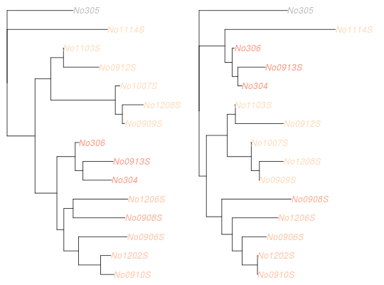

Finds the geometric median of a set of trees according to the Kendall Colijn metric.
medTree(x, groups = NULL, lambda = 0, weights = NULL, emphasise.tips = NULL, emphasise.weight = 2, return.lambda.function = FALSE, save.memory = FALSE)
treespace$vectors.return.lambda.function=TRUE or if the vectors are already supplied as the object x.NULL.emphasise.tips, this value (default 2) is the number by which vector entries corresponding to those tips are emphasised.x.x.A list of five objects:
If groups are provided, then one list is returned for each group.
If return.lambda.function=TRUE then a function is returned that produces this list for a given value of lambda.
## EXAMPLE WITH WOODMICE DATA data(woodmiceTrees) ## LOOKING FOR A SINGLE MEDIAN ## get median tree(s) res <- medTree(woodmiceTrees) res#> $centre #> [,1] [,2] [,3] [,4] [,5] [,6] [,7] [,8] [,9] [,10] [,11] [,12] #> [1,] 4.035 2.129 5.522 2.214 3.821 2.129 2.204 0.2338 5.338 4.423 2.129 3.343 #> [,13] [,14] [,15] [,16] [,17] [,18] [,19] [,20] [,21] [,22] [,23] [,24] #> [1,] 0 3.448 2.199 3.886 2.303 3.343 2.199 2.289 0.1841 3.856 4.751 2.199 #> [,25] [,26] [,27] [,28] [,29] [,30] [,31] [,32] [,33] [,34] [,35] [,36] #> [1,] 3.114 0 3.358 2.124 2.826 1.98 4.08 2.766 0.1443 2.124 2.174 4.622 #> [,37] [,38] [,39] [,40] [,41] [,42] [,43] [,44] [,45] [,46] [,47] [,48] #> [1,] 1.861 0 1.965 2.209 4.02 2.124 2.199 0.2338 6.373 4.239 2.124 3.408 #> [,49] [,50] [,51] [,52] [,53] [,54] [,55] [,56] [,57] [,58] [,59] [,60] #> [1,] 0 3.493 2.06 2.826 3.93 0.04975 2.209 2.269 2.826 1.945 0 2.045 #> [,61] [,62] [,63] [,64] [,65] [,66] [,67] [,68] [,69] [,70] [,71] [,72] #> [1,] 1.98 2.05 0.3433 3.97 3.318 1.98 4.731 0 4.323 2.766 0.1443 2.124 #> [,73] [,74] [,75] [,76] [,77] [,78] [,79] [,80] [,81] [,82] [,83] [,84] #> [1,] 2.174 4.448 1.861 0 1.965 0.0398 2.199 2.259 2.766 1.935 0 2.035 #> [,85] [,86] [,87] [,88] [,89] [,90] [,91] [,92] [,93] [,94] [,95] #> [1,] 0.2338 0.1841 0.1443 0.3682 0 0.3333 4.184 2.124 3.378 0 3.463 #> [,96] [,97] [,98] [,99] [,100] [,101] [,102] [,103] [,104] [,105] [,106] #> [1,] 2.174 3.09 0 3.269 1.861 0 1.965 0 4.413 0 1 #> [,107] [,108] [,109] [,110] [,111] [,112] [,113] [,114] [,115] [,116] #> [1,] 1 1 1 1 1 1 1 1 1 1 #> [,117] [,118] [,119] [,120] #> [1,] 1 1 1 1 #> #> $distances #> [1] 2.774 3.267 6.944 14.674 7.134 7.837 18.676 3.223 2.774 3.223 #> [11] 3.168 13.049 16.296 3.347 7.905 8.031 6.355 8.130 15.601 3.912 #> [21] 7.923 15.927 7.341 4.444 4.127 8.430 13.493 4.127 16.533 14.686 #> [31] 8.787 5.990 7.349 17.343 15.619 5.495 16.802 5.765 5.220 7.459 #> [41] 3.065 7.392 6.969 10.828 4.868 7.643 15.797 7.368 11.822 4.057 #> [51] 13.132 6.944 16.828 3.168 17.153 6.965 5.313 2.774 7.954 15.043 #> [61] 16.435 3.968 15.693 6.615 5.193 11.587 17.860 9.123 7.392 4.224 #> [71] 6.654 11.494 2.774 16.305 4.302 10.385 5.971 4.329 7.348 13.786 #> [81] 5.811 4.939 9.103 5.918 17.524 2.774 8.430 16.348 4.903 5.463 #> [91] 3.347 6.724 4.127 16.533 3.772 17.925 4.278 6.043 6.607 5.228 #> [101] 16.983 13.589 17.608 7.964 13.088 7.855 9.698 5.626 5.143 8.505 #> [111] 5.990 13.197 8.269 7.298 13.414 7.372 6.399 2.774 3.065 7.666 #> [121] 4.469 4.441 3.122 8.361 4.302 6.019 3.168 5.362 7.417 17.581 #> [131] 8.474 13.285 12.332 2.946 3.977 7.490 2.774 4.760 2.836 6.755 #> [141] 3.168 15.035 4.903 9.581 4.456 3.518 7.927 3.772 8.462 10.902 #> [151] 4.903 9.417 8.331 5.143 7.905 4.186 4.262 7.985 2.836 3.465 #> [161] 3.415 7.464 6.553 3.125 16.093 7.515 4.421 7.902 4.057 17.367 #> [171] 6.553 4.021 13.088 3.956 7.653 10.056 5.990 11.800 8.430 11.587 #> [181] 5.990 2.946 16.103 4.684 18.967 5.626 16.678 4.873 8.574 3.267 #> [191] 3.335 4.047 6.019 3.168 6.062 8.340 15.081 16.983 19.076 7.348 #> [201] 10.691 #> #> $mindist #> [1] 2.774 #> #> $treenumbers #> [1] 1 9 58 73 86 118 137 #> #> $trees #> 7 phylogenetic trees #>## plot first tree med.tree <- res$trees[[1]] plot(med.tree)## LOOKING FOR MEDIANS IN SEVERAL CLUSTERS ## identify 6 clusters groves <- findGroves(woodmiceTrees, nf=3, nclust=6) ## find median trees res.with.grp <- medTree(woodmiceTrees, groves$groups) ## there is one output per cluster names(res.with.grp)#> [1] "1" "2" "3" "4" "5" "6"## get the first median of each med.trees <- lapply(res.with.grp, function(e) ladderize(e$trees[[1]])) ## plot trees par(mfrow=c(2,3)) for(i in 1:length(med.trees)) plot(med.trees[[i]], main=paste("cluster",i))## highlight the differences between a pair of median trees plotTreeDiff(med.trees[[1]],med.trees[[5]])